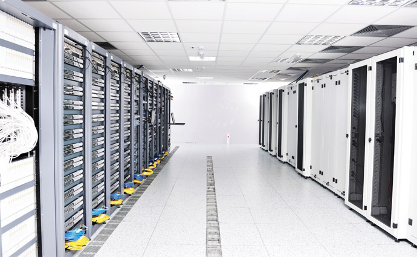

Riesgos Ambientales en Informática
Los riesgos ambientales en informática se refieren a las condiciones físicas del entorno que pueden afectar la operación de los sistemas, la integridad de los equipos y la salud de los trabajadores.
1. Temperatura y Humedad
Un control inadecuado de temperatura y humedad puede afectar tanto al hardware como al rendimiento del personal. Mantener los servidores entre 18°C y 24°C y una humedad relativa entre 45% y 60% es lo ideal.

Sala de servidores con climatización adecuada para proteger los equipos y garantizar su rendimiento.
2. Iluminación y Ventilación
- Iluminación suficiente y sin reflejos que provoquen fatiga visual.
- Ventilación constante para evitar sobrecalentamiento y acumulación de polvo.
3. Ruido y Vibraciones
El ruido excesivo de equipos o las vibraciones pueden afectar la concentración del personal y el correcto funcionamiento de dispositivos sensibles.
4. Contaminación y Polvo
El polvo, humo o partículas en el aire pueden provocar fallos eléctricos y degradación de componentes. Se recomienda:
- Filtros de aire y limpieza periódica de salas.
- Protección de equipos con carcasas cerradas.
5. Métodos de Prevención
Nota: Un entorno controlado no solo protege los equipos, también mejora la productividad y reduce riesgos para los trabajadores.